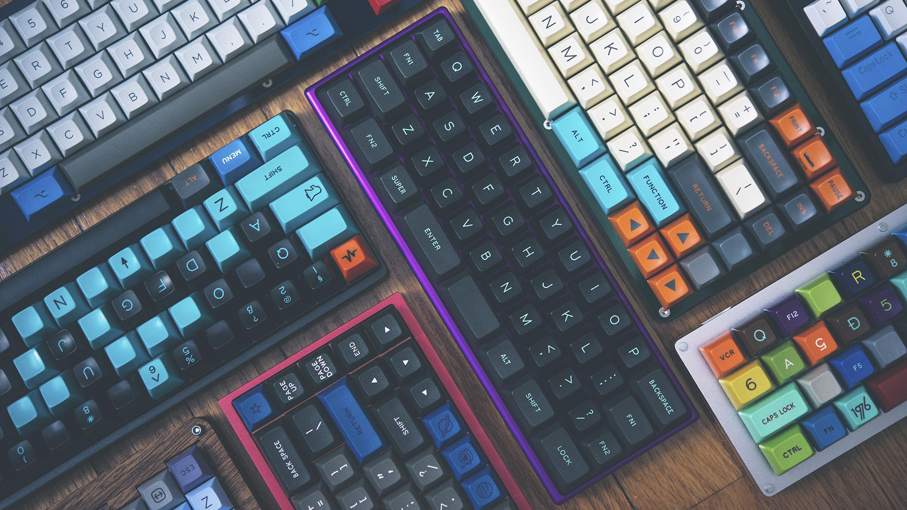

Custom Mechanical Keyboard In-depth Guide
Welcome to a detailed beginner's guide to Custom Mechanical Keyboards

You can expect to learn foundational and in-depth information about custom mechanical keyboards such as what terminology is commonly used and what parts are required to assemble a mechanical keyboard
So... Why do we build custom mechanical keyboards?
It is easily summed up by a quote from Nathan "Taeha" Kim, who said "Why not invest in something that we use so often?". Custom Mechanical Keyboards are first and foremost, a way of expression for one's self, by your choices of components, colours, typing feel and desired sound profile.There are 3 main motivations of people making custom mechanical keyboard. Firstly, it is as a statement piece on your desk that makes people go WOW. Secondly, it is for the typing feel of the keyboard, whether it has a bounce with each type or just as stiff as can be. Lastly, it is for the sound profile of the keyboard, which affected by the most factors and is the most subjective.
What sizes can I build my custom mechanical keyboard in?
Custom mechanical keyboards comes in distinct sizes or better known as form factors, which are indicated by percentages, namely 60%, 65%, 75%, 80% (TKL), 96% (1800/Compact) and 100% (Full-sized). 60% have alphas, number row and modifiers. 65% adds on arrow keys. 75% adds on the function row also known as the F row. 80% adds on the navigation cluster. 96% adds on the numpad. 100% adds more space between the section from a 96%.
What are switches?
Specifically, switches in the context of custom mechanical keyboards, are mechanical keyswitches. There are 3 main types of mechanical keyboard switches, which are linear, tactile and clicky. As their names imply, linear switches have a linear travel, tactile have a tactile bump and clicky switches have a click sound that accompanies a tactile bump.
Why do we lube switches?
It is a proven way to both improve the sound and feel of the switch while typing. However, it is time consuming and tedious but it is well worth the effort.